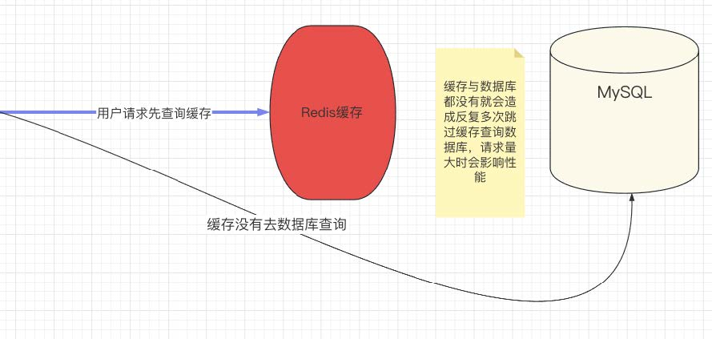

缓存穿透
缓存穿透是指查询⼀个在缓存和数据库中都不存在的数据。由于缓存没有这个数据，所以每次查询都会“穿透”缓存直接查询数据库，如果有⼤量此类查询，会给数据库带来极⼤的压⼒
这种情况如果⼀旦访问量过⼤，很容易造成MySQL服务器宕机
解决办法：
- 布隆过滤器（Bloom Filter）：这是⼀种空间效率极⾼的概率型数据结构，它可以⽤来判断⼀个元素是否在⼀个集合中。将所有可能会被请求的数据的key先存⼊布隆过滤器，当有请求过来时，先使⽤布隆过滤器判断数据是否存在，如果布隆过滤器判断数据不存在，那就直接返回，不再查询数据库。
- 空值缓存：即使⼀个key在数据库中没有对应的值，也依然将这个结果进⾏缓存，但是可以设置⼀个较短的过期时间。这样，即使攻击者使⽤⼤量不存在的key进⾏攻击，也只能触及到缓存层，⽆法达到数据库层。
- 限流：对单个⽤户的访问频率进⾏限制，防⽌恶意⽤户或者爬⾍通过⾼并发的⽅式进⾏攻击。
缓存击穿（缓存过期的瞬间）
缓存击穿是指⼀个存在的key在缓存中过期，此时有⼤量的并发请求这个key，都查不到结果，于是都去数据库中查询并回填缓存，造成数据库短时间内压⼒过⼤。简单来说，缓存击穿是指请求的数据在缓存中不存在（可能是过期，或者根本没有缓存过），导致所有的请求都去请求数据库，可能会导致数据库瞬间压⼒过⼤。
解决办法：
设置热点数据永不过期：如果某些数据特别热⻔，访问的频率远远超过其他数据，那么可以将这部分数据设置为永不过期，这样就可以避免⼤量请求突然落到数据库上。
加锁排队：对于查询数据库的操作进⾏加锁，即在缓存失效的时候，不是直接去查询数据库，⽽是先进⾏加锁操作。第⼀个请求获取到锁，然后进⾏数据库查询并回填缓存，后续的请求如果获取不到锁，可以选择等待或者返回未获取到数据。
使⽤互斥锁：可以在缓存失效的时候使⽤互斥锁，即第⼀个请求去数据库查找数据，其他的请求就等待，当第⼀个请求处理完毕后，其他请求再从缓存中获取数据。
缓存雪崩
缓存雪崩是指在缓存系统中，由于⼤量的数据同时失效，⽽引发⼤量的请求同时去请求数据库，从⽽可能会导致数据库的压⼒过⼤甚⾄导致数据库崩溃的情况。⽐如，如果⼀个系统的缓存策略设置的是某⼀刻所有的缓存同时失效，那么在这⼀刻，所有的请求都将会去请求数据库，这就可能会造成缓存雪崩。
其实最致命的雪崩就是服务器某个节点突然宕机或者断⽹，因为此时对数据库服务器的压⼒是不可预估的，很有可能瞬间把数据库压垮
解决办法：
- 缓存数据的过期时间设置为随机：避免所有数据同时过期，不会出现瞬间⼤量的数据库请求。
- 使⽤多级缓存策略：例如，使⽤⼀级缓存和⼆级缓存，⼀级缓存的失效时间短于⼆级缓存，⼀级缓存失效后，请求会访问⼆级缓存，⽽不是直接落到数据库。
- 缓存预热：在业务低峰期，对将要过期的缓存进⾏预热，预热的⽅式就是提前去更新数据。
- 使⽤⾼可⽤的缓存集群：即使某些节点挂掉，仍然可以保证系统的可⽤性。
转载请注明来源，欢迎对文章中的引用来源进行考证，欢迎指出任何有错误或不够清晰的表达。可以在下面评论区评论，也可以邮件至 1909773034@qq.com